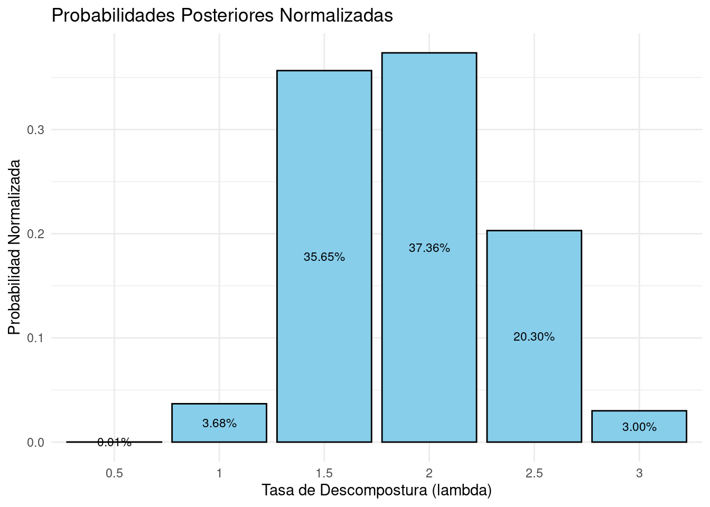
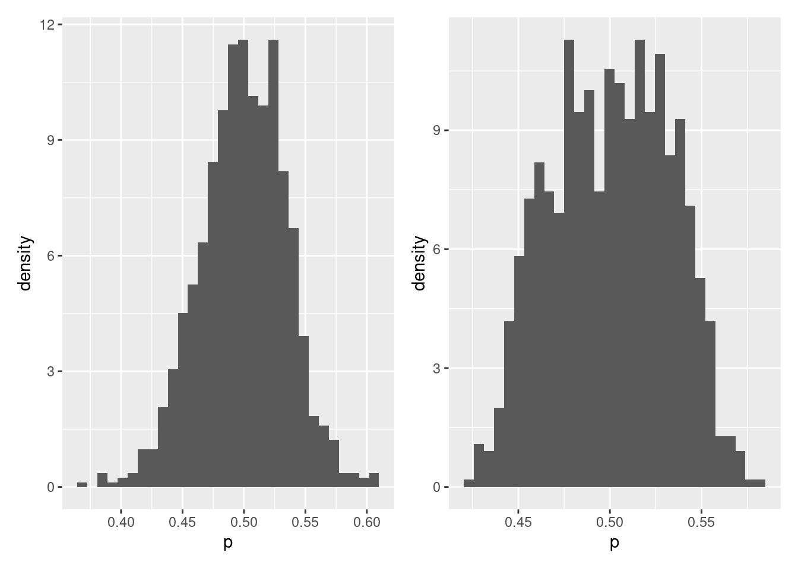
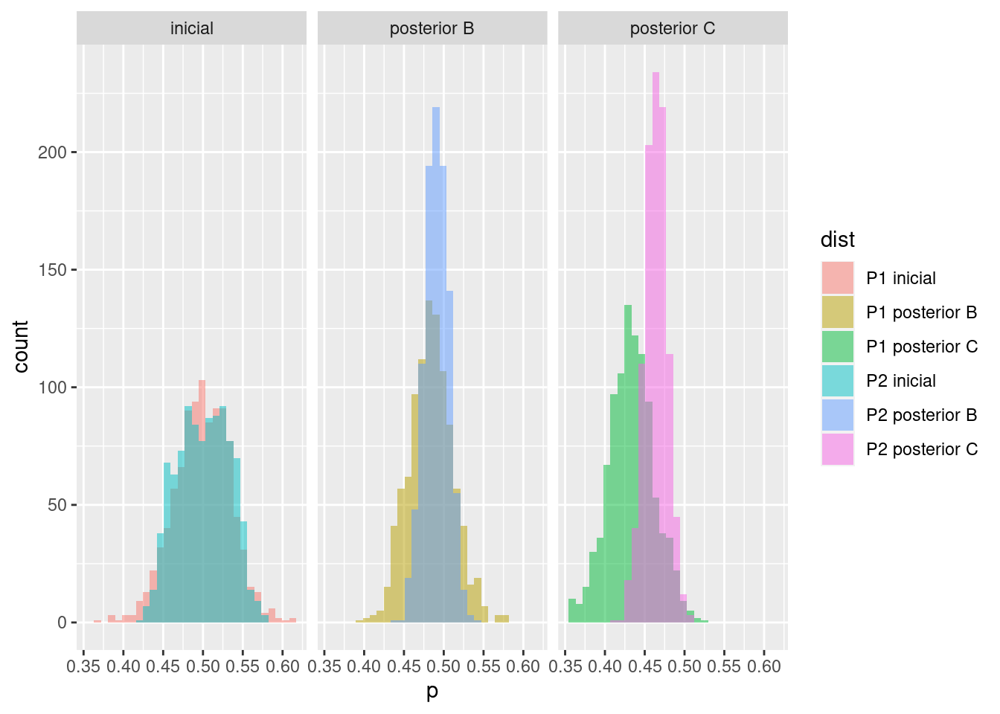
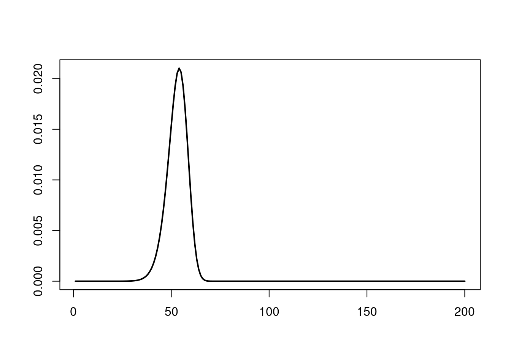
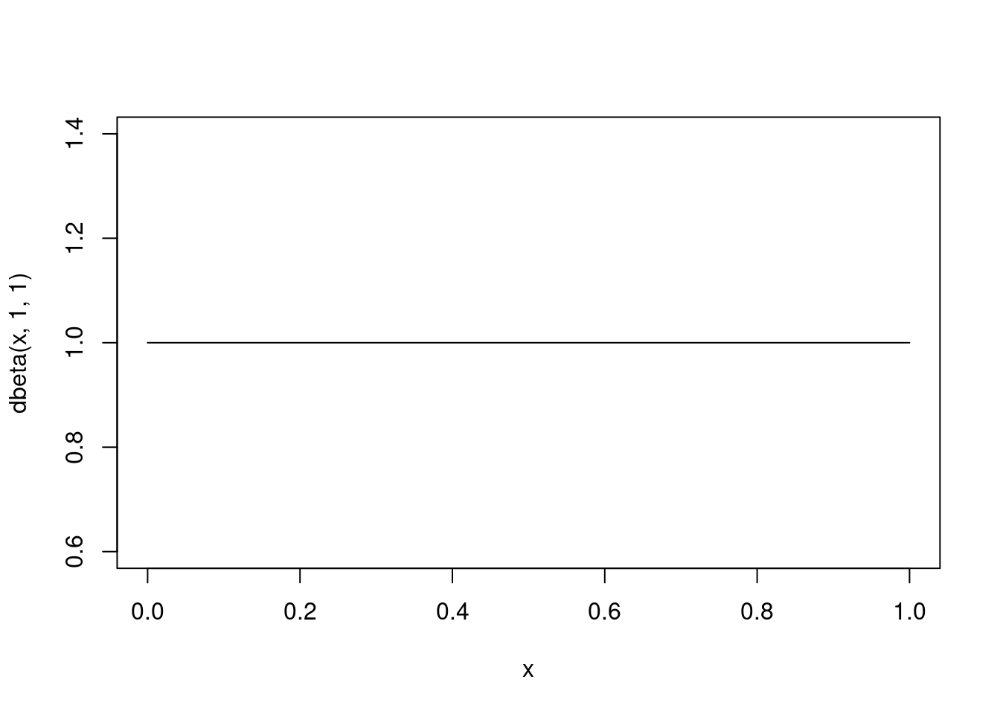
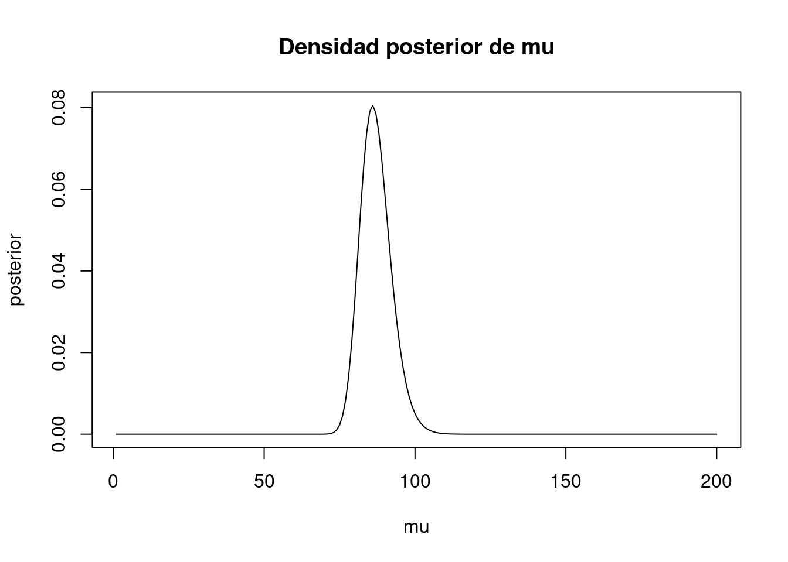

<!DOCTYPE html>
<html xmlns="http://www.w3.org/1999/xhtml" lang="en" xml:lang="en"><head>

<meta charset="utf-8">
<meta name="generator" content="quarto-1.3.450">

<meta name="viewport" content="width=device-width, initial-scale=1.0, user-scalable=yes">

<meta name="author" content="Sara">
<meta name="dcterms.date" content="2024-02-06">

<title>Tarea 2</title>
<style>
code{white-space: pre-wrap;}
span.smallcaps{font-variant: small-caps;}
div.columns{display: flex; gap: min(4vw, 1.5em);}
div.column{flex: auto; overflow-x: auto;}
div.hanging-indent{margin-left: 1.5em; text-indent: -1.5em;}
ul.task-list{list-style: none;}
ul.task-list li input[type="checkbox"] {
  width: 0.8em;
  margin: 0 0.8em 0.2em -1em; /* quarto-specific, see https://github.com/quarto-dev/quarto-cli/issues/4556 */ 
  vertical-align: middle;
}
/* CSS for syntax highlighting */
pre > code.sourceCode { white-space: pre; position: relative; }
pre > code.sourceCode > span { display: inline-block; line-height: 1.25; }
pre > code.sourceCode > span:empty { height: 1.2em; }
.sourceCode { overflow: visible; }
code.sourceCode > span { color: inherit; text-decoration: inherit; }
div.sourceCode { margin: 1em 0; }
pre.sourceCode { margin: 0; }
@media screen {
div.sourceCode { overflow: auto; }
}
@media print {
pre > code.sourceCode { white-space: pre-wrap; }
pre > code.sourceCode > span { text-indent: -5em; padding-left: 5em; }
}
pre.numberSource code
  { counter-reset: source-line 0; }
pre.numberSource code > span
  { position: relative; left: -4em; counter-increment: source-line; }
pre.numberSource code > span > a:first-child::before
  { content: counter(source-line);
    position: relative; left: -1em; text-align: right; vertical-align: baseline;
    border: none; display: inline-block;
    -webkit-touch-callout: none; -webkit-user-select: none;
    -khtml-user-select: none; -moz-user-select: none;
    -ms-user-select: none; user-select: none;
    padding: 0 4px; width: 4em;
  }
pre.numberSource { margin-left: 3em;  padding-left: 4px; }
div.sourceCode
  {   }
@media screen {
pre > code.sourceCode > span > a:first-child::before { text-decoration: underline; }
}
</style>


<script src="tarea2_files/libs/clipboard/clipboard.min.js"></script>
<script src="tarea2_files/libs/quarto-html/quarto.js"></script>
<script src="tarea2_files/libs/quarto-html/popper.min.js"></script>
<script src="tarea2_files/libs/quarto-html/tippy.umd.min.js"></script>
<script src="tarea2_files/libs/quarto-html/anchor.min.js"></script>
<link href="tarea2_files/libs/quarto-html/tippy.css" rel="stylesheet">
<link href="tarea2_files/libs/quarto-html/quarto-syntax-highlighting.css" rel="stylesheet" id="quarto-text-highlighting-styles">
<script src="tarea2_files/libs/bootstrap/bootstrap.min.js"></script>
<link href="tarea2_files/libs/bootstrap/bootstrap-icons.css" rel="stylesheet">
<link href="tarea2_files/libs/bootstrap/bootstrap.min.css" rel="stylesheet" id="quarto-bootstrap" data-mode="light">

  <script src="https://polyfill.io/v3/polyfill.min.js?features=es6"></script>
  <script src="https://cdn.jsdelivr.net/npm/mathjax@3/es5/tex-chtml-full.js" type="text/javascript"></script>

</head>

<body class="fullcontent">

<div id="quarto-content" class="page-columns page-rows-contents page-layout-article">

<main class="content" id="quarto-document-content">

<header id="title-block-header" class="quarto-title-block default">
<div class="quarto-title">
<h1 class="title">Tarea 2</h1>
</div>


<div class="quarto-title-meta">

    <div>
    <div class="quarto-title-meta-heading">Author</div>
    <div class="quarto-title-meta-contents">
             <p>Sara </p>
          </div>
  </div>
    
    <div>
    <div class="quarto-title-meta-heading">Published</div>
    <div class="quarto-title-meta-contents">
      <p class="date">February 6, 2024</p>
    </div>
  </div>
  
    
  </div>
  

</header>

<div class="cell">
<div class="sourceCode cell-code" id="cb1"><pre class="sourceCode r code-with-copy"><code class="sourceCode r"><span id="cb1-1"><a href="#cb1-1" aria-hidden="true" tabindex="-1"></a><span class="fu">library</span>(ggplot2)</span>
<span id="cb1-2"><a href="#cb1-2" aria-hidden="true" tabindex="-1"></a><span class="fu">library</span>(tidyverse)</span></code><button title="Copy to Clipboard" class="code-copy-button"><i class="bi"></i></button></pre></div>
<div class="cell-output cell-output-stderr">
<pre><code>── Attaching core tidyverse packages ──────────────────────── tidyverse 2.0.0 ──
✔ dplyr     1.1.4     ✔ readr     2.1.5
✔ forcats   1.0.0     ✔ stringr   1.5.1
✔ lubridate 1.9.3     ✔ tibble    3.2.1
✔ purrr     1.0.2     ✔ tidyr     1.3.0
── Conflicts ────────────────────────────────────────── tidyverse_conflicts() ──
✖ dplyr::filter() masks stats::filter()
✖ dplyr::lag()    masks stats::lag()
ℹ Use the conflicted package (&lt;http://conflicted.r-lib.org/&gt;) to force all conflicts to become errors</code></pre>
</div>
<div class="sourceCode cell-code" id="cb3"><pre class="sourceCode r code-with-copy"><code class="sourceCode r"><span id="cb3-1"><a href="#cb3-1" aria-hidden="true" tabindex="-1"></a><span class="fu">library</span>(patchwork)</span></code><button title="Copy to Clipboard" class="code-copy-button"><i class="bi"></i></button></pre></div>
</div>
<ol type="1">
<li>Estimando una media Poisson usando una inicial discreta. Supongan que son dueños de una compañía de transporte con una flota grande de camiones. Las descomposturas ocurren aleatoriamente en el tiempo y supóngase que el número de descomposturas durante un intervalo de <span class="math inline">\(t\)</span> días sigue un distribución Poisson con media <span class="math inline">\(λt\)</span>. El parámetro <span class="math inline">\(λ\)</span> es la tasa de descompostura diaria. Los posibles valores para <span class="math inline">\(λ\)</span> son <span class="math inline">\(0.5\)</span>, <span class="math inline">\(1\)</span>, <span class="math inline">\(1.5\)</span>, <span class="math inline">\(2\)</span>, <span class="math inline">\(2.5\)</span> y <span class="math inline">\(3\)</span>, con respectivas probabilidades <span class="math inline">\(0.1\)</span>, <span class="math inline">\(0.2\)</span>, <span class="math inline">\(0.3\)</span>, <span class="math inline">\(0.2\)</span>, <span class="math inline">\(0.15\)</span> y <span class="math inline">\(0.05\)</span>. Si uno observa <span class="math inline">\(y\)</span> descomposturas, entonces la probabilidad posterior de <span class="math inline">\(λ\)</span> es proporcional a</li>
</ol>
<p><span class="math display">\[g(λ) exp(−tλ)(tλ)y,\]</span> donde <span class="math inline">\(g\)</span> es la distribución inicial.</p>
<ol type="a">
<li><p>Si <span class="math inline">\(12\)</span> camiones se descomponen en un periodo de <span class="math inline">\(6\)</span> días, encontrar la probabilidad posterior para las diferentes tasas.</p></li>
<li><p>Encontrar la probabilidad de que no haya descomposturas durante la siguiente semana.</p></li>
</ol>
<p>Hint: Si la tasa es <span class="math inline">\(λ\)</span>, la probabilidad condicional de no descomposturas durante un periodo de <span class="math inline">\(7\)</span> días está dado por <span class="math inline">\(\exp(−7λ)\)</span>. Se puede calcular esta probabilidad predictiva multiplicando la lista de probabilidades condicionales por las probabilidades posteriores de <span class="math inline">\(λ\)</span> y encontrando la suma de los productos</p>
<ol start="2" type="1">
<li>Estimando una proporción y predicción de una muestra futura. Un estudio reporta sobre los efectos de largo plazo de exposición a bajas dosis de plomo en niños. Los investigadores analizaron el contenido de plomo en la caída de los dientes de leche. De los niños cuyos dientes tienen un contenido de plomo mayor que <span class="math inline">\(22.22\)</span> ppm, <span class="math inline">\(22\)</span> eventualmente se graduaron de la preparatoria y <span class="math inline">\(7\)</span> no. Supongan que su densidad inicial para <span class="math inline">\(p\)</span>, la proporción de todos tales niños que se graduaron de preparatoria es <span class="math inline">\(beta(1, 1)\)</span>, y posterior es <span class="math inline">\(beta(23, 8)\)</span>.</li>
</ol>
<ol type="a">
<li><p>Encontrar un intervalo estimado de <span class="math inline">\(90 %\)</span> para <span class="math inline">\(p\)</span>.</p></li>
<li><p>Encontrar la probabilidad de que <span class="math inline">\(p\)</span> exceda 0.6.</p></li>
</ol>
<ol start="3" type="1">
<li>Estimando una media normal posterior con una inicial discreta. Supongamos que están interesados en estimar el promedio de caida de lluvia por año <span class="math inline">\(µ\)</span> en (cm) para una ciudad grande del Centro de México. Supongan que la caída anual individual <span class="math inline">\(y_1 , . . . , y_n\)</span> son obtenidas de una población que se supone <span class="math inline">\(N (µ, 100)\)</span>. Antes de recolectar los datos, supongan que creen que la lluvia media puede estar en los siguiente valores con respectivas probabilidades</li>
</ol>
<div class="cell">
<div class="sourceCode cell-code" id="cb4"><pre class="sourceCode r code-with-copy"><code class="sourceCode r"><span id="cb4-1"><a href="#cb4-1" aria-hidden="true" tabindex="-1"></a>miu <span class="ot">=</span> <span class="fu">c</span>(<span class="dv">20</span>,<span class="dv">30</span>,<span class="dv">40</span>,<span class="dv">50</span>,<span class="dv">60</span>,<span class="dv">70</span>)</span>
<span id="cb4-2"><a href="#cb4-2" aria-hidden="true" tabindex="-1"></a></span>
<span id="cb4-3"><a href="#cb4-3" aria-hidden="true" tabindex="-1"></a>g_miu <span class="ot">=</span> <span class="fu">c</span>(<span class="fl">0.1</span>, <span class="fl">0.15</span>, <span class="fl">0.25</span>, <span class="dv">1</span>, <span class="fl">0.25</span>, <span class="fl">0.15</span>, <span class="fl">0.1</span>)</span></code><button title="Copy to Clipboard" class="code-copy-button"><i class="bi"></i></button></pre></div>
</div>
<ol type="a">
<li><p>Supongan que se observan los totales de caída de lluvia <span class="math inline">\(38.6\)</span>, <span class="math inline">\(42.4\)</span>, <span class="math inline">\(57.5\)</span>, <span class="math inline">\(40.5\)</span>, <span class="math inline">\(51.7\)</span>, <span class="math inline">\(67.1\)</span>, <span class="math inline">\(33.4\)</span>, <span class="math inline">\(60.9\)</span>, <span class="math inline">\(64.1\)</span>, <span class="math inline">\(40.1\)</span>, <span class="math inline">\(40.7\)</span> y <span class="math inline">\(6.4\)</span>. Calcular la media.</p></li>
<li><p>Calcular la función de verosimilitud utilizando como estadística suficiente la media <span class="math inline">\(ȳ\)</span>.</p></li>
</ol>
<ul>
<li><p>Calcular las probabilidades posteriores para <span class="math inline">\(µ\)</span></p></li>
<li><p>Encontrar un intervalo de probabilidad de <span class="math inline">\(80 %\)</span> para <span class="math inline">\(µ\)</span>.</p></li>
</ul>
<ol start="4" type="1">
<li>Modelo muestral Cauchy. Supongan que se observa una muestra aleatoria <span class="math inline">\(y_1 , . . . , y_n\)</span> de una densidad Cauchy con parámetro de localización <span class="math inline">\(θ\)</span> y parámetro de escala <span class="math inline">\(1\)</span>. Si una inicial uniforme se considera para <span class="math inline">\(θ\)</span>, entonces la densidad posterior, ¿cuál es? Supongan que se observan los datos <span class="math inline">\(0, 10, 9, 8, 11, 3, 3, 8, 8, 11\)</span>.</li>
</ol>
<ol type="a">
<li><p>Calcula un grid para <span class="math inline">\(θ\)</span> de <span class="math inline">\(-2\)</span> a <span class="math inline">\(12\)</span> en pasos de <span class="math inline">\(0.1\)</span></p></li>
<li><p>Calcula la densidad posterior en este grid.</p></li>
<li><p>Grafica la densidad y comenten sobre sus características principales.</p></li>
<li><p>Calcula la media posterior y desviación estándar posterior.</p></li>
</ol>
<ol start="5" type="1">
<li><strong>Robustez Bayesiana.</strong> Supongan que están a punto de lanzar una moneda que creen que es honesta. Si <span class="math inline">\(p\)</span> denota la probabilidad de obtener sol, entonces su mejor creencia es que <span class="math inline">\(p = 0.5\)</span></li>
</ol>
<p>Adicionalmente, creen que es altamente probable que la moneda sea cercana a honesta, lo que cuantifican como <span class="math inline">\(P (0.44 ≤ p ≤ 0.56) = 0.9\)</span>. Consideren las siguientes dos iniciales para <span class="math inline">\(p\)</span>:</p>
<p>P1 <span class="math inline">\(p ∼ beta(100, 100)\)</span></p>
<p>P2 <span class="math inline">\(p ∼ 0.9beta(500, 500) + 0.1beta(1, 1)\)</span></p>
<ol type="a">
<li>Simular <span class="math inline">\(1000\)</span> valores de cada densidad inicial P1 y P2. Resumiendo las muestras simuladas, mostrar que ambas iniciales concuerdan con las creencias iniciales acerca de la probabilidad <span class="math inline">\(p\)</span> del lanzamiento de moneda.</li>
</ol>
<div class="cell">
<div class="sourceCode cell-code" id="cb5"><pre class="sourceCode r code-with-copy"><code class="sourceCode r"><span id="cb5-1"><a href="#cb5-1" aria-hidden="true" tabindex="-1"></a><span class="co">#semilla</span></span>
<span id="cb5-2"><a href="#cb5-2" aria-hidden="true" tabindex="-1"></a><span class="fu">set.seed</span>(<span class="dv">12345</span>)</span>
<span id="cb5-3"><a href="#cb5-3" aria-hidden="true" tabindex="-1"></a><span class="co">#Parámetros</span></span>
<span id="cb5-4"><a href="#cb5-4" aria-hidden="true" tabindex="-1"></a>alpha_1_ini <span class="ot">=</span> <span class="dv">100</span></span>
<span id="cb5-5"><a href="#cb5-5" aria-hidden="true" tabindex="-1"></a>beta_1_ini <span class="ot">=</span> <span class="dv">100</span></span>
<span id="cb5-6"><a href="#cb5-6" aria-hidden="true" tabindex="-1"></a><span class="do">###</span></span>
<span id="cb5-7"><a href="#cb5-7" aria-hidden="true" tabindex="-1"></a>alpha_21_ini <span class="ot">=</span> <span class="dv">500</span></span>
<span id="cb5-8"><a href="#cb5-8" aria-hidden="true" tabindex="-1"></a>beta_21_ini <span class="ot">=</span> <span class="dv">500</span></span>
<span id="cb5-9"><a href="#cb5-9" aria-hidden="true" tabindex="-1"></a>alpha_22_ini <span class="ot">=</span> <span class="dv">1</span></span>
<span id="cb5-10"><a href="#cb5-10" aria-hidden="true" tabindex="-1"></a>beta_22_ini <span class="ot">=</span> <span class="dv">1</span></span>
<span id="cb5-11"><a href="#cb5-11" aria-hidden="true" tabindex="-1"></a></span>
<span id="cb5-12"><a href="#cb5-12" aria-hidden="true" tabindex="-1"></a><span class="co">#Simulación de P1 y P2 inicial</span></span>
<span id="cb5-13"><a href="#cb5-13" aria-hidden="true" tabindex="-1"></a>P1_inicial <span class="ot">&lt;-</span><span class="fu">tibble</span> (<span class="at">p =</span> <span class="fu">rbeta</span>(<span class="dv">1000</span>, alpha_1_ini, beta_1_ini))</span>
<span id="cb5-14"><a href="#cb5-14" aria-hidden="true" tabindex="-1"></a>P2_inicial <span class="ot">&lt;-</span><span class="fu">tibble</span> (<span class="at">p =</span><span class="fl">0.9</span><span class="sc">*</span><span class="fu">rbeta</span>(<span class="dv">1000</span>, alpha_21_ini, beta_21_ini)<span class="sc">+</span><span class="fl">0.1</span><span class="sc">*</span><span class="fu">rbeta</span>(<span class="dv">1000</span>, alpha_22_ini, beta_22_ini))</span>
<span id="cb5-15"><a href="#cb5-15" aria-hidden="true" tabindex="-1"></a><span class="co"># Comprobamos que al menos el 90% esté en el intervalo [0.44, 0.56]</span></span>
<span id="cb5-16"><a href="#cb5-16" aria-hidden="true" tabindex="-1"></a><span class="fu">print</span>(<span class="fu">sum</span>(P1_inicial<span class="sc">&gt;=</span><span class="fl">0.44</span> <span class="sc">&amp;</span> P1_inicial<span class="sc">&lt;=</span><span class="fl">0.56</span>) <span class="sc">/</span> <span class="dv">1000</span>)</span></code><button title="Copy to Clipboard" class="code-copy-button"><i class="bi"></i></button></pre></div>
<div class="cell-output cell-output-stdout">
<pre><code>[1] 0.918</code></pre>
</div>
<div class="sourceCode cell-code" id="cb7"><pre class="sourceCode r code-with-copy"><code class="sourceCode r"><span id="cb7-1"><a href="#cb7-1" aria-hidden="true" tabindex="-1"></a><span class="fu">print</span>(<span class="fu">sum</span>(P2_inicial<span class="sc">&gt;=</span><span class="fl">0.44</span> <span class="sc">&amp;</span> P2_inicial<span class="sc">&lt;=</span><span class="fl">0.56</span>) <span class="sc">/</span> <span class="dv">1000</span>)</span></code><button title="Copy to Clipboard" class="code-copy-button"><i class="bi"></i></button></pre></div>
<div class="cell-output cell-output-stdout">
<pre><code>[1] 0.966</code></pre>
</div>
<div class="sourceCode cell-code" id="cb9"><pre class="sourceCode r code-with-copy"><code class="sourceCode r"><span id="cb9-1"><a href="#cb9-1" aria-hidden="true" tabindex="-1"></a><span class="fu">quantile</span>(P1_inicial<span class="sc">$</span>p , <span class="fu">c</span>(<span class="fl">0.05</span>,<span class="fl">0.95</span>))</span></code><button title="Copy to Clipboard" class="code-copy-button"><i class="bi"></i></button></pre></div>
<div class="cell-output cell-output-stdout">
<pre><code>       5%       95% 
0.4409330 0.5523635 </code></pre>
</div>
<div class="sourceCode cell-code" id="cb11"><pre class="sourceCode r code-with-copy"><code class="sourceCode r"><span id="cb11-1"><a href="#cb11-1" aria-hidden="true" tabindex="-1"></a><span class="fu">quantile</span>(P2_inicial<span class="sc">$</span>p , <span class="fu">c</span>(<span class="fl">0.05</span>,<span class="fl">0.95</span>))</span></code><button title="Copy to Clipboard" class="code-copy-button"><i class="bi"></i></button></pre></div>
<div class="cell-output cell-output-stdout">
<pre><code>       5%       95% 
0.4490553 0.5511169 </code></pre>
</div>
</div>
<p><strong>Por tanto cumplen con tener al menos el 90% de probabilidad de <span class="math inline">\(p \in [0.44, 0.56]\)</span> </strong></p>
<div class="cell">
<div class="sourceCode cell-code" id="cb13"><pre class="sourceCode r code-with-copy"><code class="sourceCode r"><span id="cb13-1"><a href="#cb13-1" aria-hidden="true" tabindex="-1"></a>g1 <span class="ot">&lt;-</span> <span class="fu">ggplot</span>(P1_inicial) <span class="sc">+</span> </span>
<span id="cb13-2"><a href="#cb13-2" aria-hidden="true" tabindex="-1"></a>  <span class="fu">geom_histogram</span>(<span class="fu">aes</span>(<span class="at">x =</span> p, <span class="at">y =</span> ..density..), <span class="at">bins =</span> <span class="dv">30</span>)</span>
<span id="cb13-3"><a href="#cb13-3" aria-hidden="true" tabindex="-1"></a>g2 <span class="ot">&lt;-</span> <span class="fu">ggplot</span>(P2_inicial) <span class="sc">+</span> </span>
<span id="cb13-4"><a href="#cb13-4" aria-hidden="true" tabindex="-1"></a>  <span class="fu">geom_histogram</span>(<span class="fu">aes</span>(<span class="at">x =</span> p, <span class="at">y =</span> ..density..), <span class="at">bins =</span> <span class="dv">30</span>)</span>
<span id="cb13-5"><a href="#cb13-5" aria-hidden="true" tabindex="-1"></a>g1<span class="sc">+</span>g2</span></code><button title="Copy to Clipboard" class="code-copy-button"><i class="bi"></i></button></pre></div>
<div class="cell-output cell-output-stderr">
<pre><code>Warning: The dot-dot notation (`..density..`) was deprecated in ggplot2 3.4.0.
ℹ Please use `after_stat(density)` instead.</code></pre>
</div>
<div class="cell-output-display">
<p></p>
</div>
</div>
<ol start="2" type="a">
<li>Supongan que lanzan la moneda <span class="math inline">\(100\)</span> veces y obtienen <span class="math inline">\(45\)</span> soles. Simular <span class="math inline">\(1000\)</span> valores de las distribuciones posteriores P1 y P2, y calcular intervalos de probabilidad del <span class="math inline">\(90 %\)</span>.</li>
</ol>
<p><strong>Para P1, se usa el conjugado Beta-Binomial, dado que la distribución inicial es una Beta y la verosimilitud está dada por una Binomial:</strong></p>
<p><span class="math display">\[\text{Likelihood: } Binomial(n,p)\Rightarrow P(x|n,p)=\binom{n}{x}p^x(1-p)^{n-x}, p\in[0,1]\]</span> <strong>Por lo que la posterior será de la forma:</strong> <span class="math display">\[\text{Posterior} \propto \text{Likelihood} \times \text{Prior} \]</span> <span class="math display">\[\text{Posterior: }Beta(\alpha+x,\beta+n-x)\]</span></p>
<div class="cell">
<div class="sourceCode cell-code" id="cb15"><pre class="sourceCode r code-with-copy"><code class="sourceCode r"><span id="cb15-1"><a href="#cb15-1" aria-hidden="true" tabindex="-1"></a>n <span class="ot">=</span> <span class="dv">100</span> <span class="co"># en 100 lanzamientos</span></span>
<span id="cb15-2"><a href="#cb15-2" aria-hidden="true" tabindex="-1"></a>x_B <span class="ot">=</span> <span class="dv">45</span>  <span class="co"># se obtienen 45 éxitos</span></span>
<span id="cb15-3"><a href="#cb15-3" aria-hidden="true" tabindex="-1"></a><span class="co"># Nuevos parámetros</span></span>
<span id="cb15-4"><a href="#cb15-4" aria-hidden="true" tabindex="-1"></a>alpha_1_posB <span class="ot">=</span> alpha_1_ini <span class="sc">+</span> x_B</span>
<span id="cb15-5"><a href="#cb15-5" aria-hidden="true" tabindex="-1"></a>beta_1_posB <span class="ot">=</span> beta_1_ini <span class="sc">+</span> n <span class="sc">-</span> x_B</span>
<span id="cb15-6"><a href="#cb15-6" aria-hidden="true" tabindex="-1"></a></span>
<span id="cb15-7"><a href="#cb15-7" aria-hidden="true" tabindex="-1"></a>alpha_21_posB <span class="ot">=</span> alpha_21_ini <span class="sc">+</span> x_B</span>
<span id="cb15-8"><a href="#cb15-8" aria-hidden="true" tabindex="-1"></a>beta_21_posB <span class="ot">=</span> beta_21_ini <span class="sc">+</span> n <span class="sc">-</span> x_B</span>
<span id="cb15-9"><a href="#cb15-9" aria-hidden="true" tabindex="-1"></a>alpha_22_posB <span class="ot">=</span> alpha_22_ini <span class="sc">+</span> x_B</span>
<span id="cb15-10"><a href="#cb15-10" aria-hidden="true" tabindex="-1"></a>beta_22_posB <span class="ot">=</span> beta_22_ini <span class="sc">+</span> n <span class="sc">-</span> x_B</span></code><button title="Copy to Clipboard" class="code-copy-button"><i class="bi"></i></button></pre></div>
</div>
<p><strong>Haciendo la simulación:</strong></p>
<div class="cell">
<div class="sourceCode cell-code" id="cb16"><pre class="sourceCode r code-with-copy"><code class="sourceCode r"><span id="cb16-1"><a href="#cb16-1" aria-hidden="true" tabindex="-1"></a>P1_posB <span class="ot">&lt;-</span><span class="fu">tibble</span> (<span class="at">p =</span> <span class="fu">rbeta</span>(<span class="dv">1000</span>, alpha_1_posB, beta_1_posB))</span>
<span id="cb16-2"><a href="#cb16-2" aria-hidden="true" tabindex="-1"></a>P2_posB <span class="ot">&lt;-</span><span class="fu">tibble</span> (<span class="at">p =</span><span class="fl">0.9</span><span class="sc">*</span><span class="fu">rbeta</span>(<span class="dv">1000</span>, alpha_21_posB, beta_21_posB)<span class="sc">+</span><span class="fl">0.1</span><span class="sc">*</span><span class="fu">rbeta</span>(<span class="dv">1000</span>, alpha_22_posB, beta_22_posB))</span>
<span id="cb16-3"><a href="#cb16-3" aria-hidden="true" tabindex="-1"></a></span>
<span id="cb16-4"><a href="#cb16-4" aria-hidden="true" tabindex="-1"></a>g3 <span class="ot">&lt;-</span> <span class="fu">ggplot</span>(P1_posB) <span class="sc">+</span> </span>
<span id="cb16-5"><a href="#cb16-5" aria-hidden="true" tabindex="-1"></a>  <span class="fu">geom_histogram</span>(<span class="fu">aes</span>(<span class="at">x =</span> p, <span class="at">y =</span> ..density..), <span class="at">bins =</span> <span class="dv">30</span>)</span>
<span id="cb16-6"><a href="#cb16-6" aria-hidden="true" tabindex="-1"></a>g4 <span class="ot">&lt;-</span> <span class="fu">ggplot</span>(P2_posB) <span class="sc">+</span> </span>
<span id="cb16-7"><a href="#cb16-7" aria-hidden="true" tabindex="-1"></a>  <span class="fu">geom_histogram</span>(<span class="fu">aes</span>(<span class="at">x =</span> p, <span class="at">y =</span> ..density..), <span class="at">bins =</span> <span class="dv">30</span>)</span>
<span id="cb16-8"><a href="#cb16-8" aria-hidden="true" tabindex="-1"></a>g1<span class="sc">+</span>g2</span></code><button title="Copy to Clipboard" class="code-copy-button"><i class="bi"></i></button></pre></div>
<div class="cell-output-display">
<p></p>
</div>
</div>
<p><strong>Calculando intervalos de probabilidad:</strong></p>
<div class="cell">
<div class="sourceCode cell-code" id="cb17"><pre class="sourceCode r code-with-copy"><code class="sourceCode r"><span id="cb17-1"><a href="#cb17-1" aria-hidden="true" tabindex="-1"></a><span class="fu">quantile</span>(P1_posB<span class="sc">$</span>p , <span class="fu">c</span>(<span class="fl">0.05</span>,<span class="fl">0.95</span>))</span></code><button title="Copy to Clipboard" class="code-copy-button"><i class="bi"></i></button></pre></div>
<div class="cell-output cell-output-stdout">
<pre><code>       5%       95% 
0.4389260 0.5291968 </code></pre>
</div>
<div class="sourceCode cell-code" id="cb19"><pre class="sourceCode r code-with-copy"><code class="sourceCode r"><span id="cb19-1"><a href="#cb19-1" aria-hidden="true" tabindex="-1"></a><span class="fu">quantile</span>(P2_posB<span class="sc">$</span>p , <span class="fu">c</span>(<span class="fl">0.05</span>,<span class="fl">0.95</span>))</span></code><button title="Copy to Clipboard" class="code-copy-button"><i class="bi"></i></button></pre></div>
<div class="cell-output cell-output-stdout">
<pre><code>       5%       95% 
0.4658571 0.5143838 </code></pre>
</div>
</div>
<ol start="3" type="a">
<li>Supongan que sólo observan <span class="math inline">\(30\)</span> soles de los <span class="math inline">\(100\)</span> lanzamientos. Nuevamente simular <span class="math inline">\(1000\)</span> valores de las dos posteriores y calcular intervalos de probabilidad del <span class="math inline">\(90 %\)</span>.</li>
</ol>
<div class="cell">
<div class="sourceCode cell-code" id="cb21"><pre class="sourceCode r code-with-copy"><code class="sourceCode r"><span id="cb21-1"><a href="#cb21-1" aria-hidden="true" tabindex="-1"></a>n <span class="ot">=</span> <span class="dv">100</span> <span class="co"># en 100 lanzamientos</span></span>
<span id="cb21-2"><a href="#cb21-2" aria-hidden="true" tabindex="-1"></a>x_C <span class="ot">=</span> <span class="dv">30</span>  <span class="co"># se obtienen 45 éxitos</span></span>
<span id="cb21-3"><a href="#cb21-3" aria-hidden="true" tabindex="-1"></a><span class="co"># Nuevos parámetros</span></span>
<span id="cb21-4"><a href="#cb21-4" aria-hidden="true" tabindex="-1"></a>alpha_1_posC <span class="ot">=</span> alpha_1_ini <span class="sc">+</span> x_C</span>
<span id="cb21-5"><a href="#cb21-5" aria-hidden="true" tabindex="-1"></a>beta_1_posC <span class="ot">=</span> beta_1_ini <span class="sc">+</span> n <span class="sc">-</span> x_C</span>
<span id="cb21-6"><a href="#cb21-6" aria-hidden="true" tabindex="-1"></a></span>
<span id="cb21-7"><a href="#cb21-7" aria-hidden="true" tabindex="-1"></a>alpha_21_posC <span class="ot">=</span> alpha_21_ini <span class="sc">+</span> x_C</span>
<span id="cb21-8"><a href="#cb21-8" aria-hidden="true" tabindex="-1"></a>beta_21_posC <span class="ot">=</span> beta_21_ini <span class="sc">+</span> n <span class="sc">-</span> x_C</span>
<span id="cb21-9"><a href="#cb21-9" aria-hidden="true" tabindex="-1"></a>alpha_22_posC <span class="ot">=</span> alpha_22_ini <span class="sc">+</span> x_C</span>
<span id="cb21-10"><a href="#cb21-10" aria-hidden="true" tabindex="-1"></a>beta_22_posC <span class="ot">=</span> beta_22_ini <span class="sc">+</span> n <span class="sc">-</span> x_C</span></code><button title="Copy to Clipboard" class="code-copy-button"><i class="bi"></i></button></pre></div>
</div>
<p><strong>Haciendo la simulación:</strong></p>
<div class="cell">
<div class="sourceCode cell-code" id="cb22"><pre class="sourceCode r code-with-copy"><code class="sourceCode r"><span id="cb22-1"><a href="#cb22-1" aria-hidden="true" tabindex="-1"></a>P1_posC <span class="ot">&lt;-</span><span class="fu">tibble</span> (<span class="at">p =</span> <span class="fu">rbeta</span>(<span class="dv">1000</span>, alpha_1_posC, beta_1_posC))</span>
<span id="cb22-2"><a href="#cb22-2" aria-hidden="true" tabindex="-1"></a>P2_posC <span class="ot">&lt;-</span><span class="fu">tibble</span> (<span class="at">p =</span><span class="fl">0.9</span><span class="sc">*</span><span class="fu">rbeta</span>(<span class="dv">1000</span>, alpha_21_posC, beta_21_posC)<span class="sc">+</span><span class="fl">0.1</span><span class="sc">*</span><span class="fu">rbeta</span>(<span class="dv">1000</span>, alpha_22_posC, beta_22_posC))</span>
<span id="cb22-3"><a href="#cb22-3" aria-hidden="true" tabindex="-1"></a></span>
<span id="cb22-4"><a href="#cb22-4" aria-hidden="true" tabindex="-1"></a>g3 <span class="ot">&lt;-</span> <span class="fu">ggplot</span>(P1_posC) <span class="sc">+</span> </span>
<span id="cb22-5"><a href="#cb22-5" aria-hidden="true" tabindex="-1"></a>  <span class="fu">geom_histogram</span>(<span class="fu">aes</span>(<span class="at">x =</span> p, <span class="at">y =</span> ..density..), <span class="at">bins =</span> <span class="dv">30</span>)</span>
<span id="cb22-6"><a href="#cb22-6" aria-hidden="true" tabindex="-1"></a>g4 <span class="ot">&lt;-</span> <span class="fu">ggplot</span>(P2_posC) <span class="sc">+</span> </span>
<span id="cb22-7"><a href="#cb22-7" aria-hidden="true" tabindex="-1"></a>  <span class="fu">geom_histogram</span>(<span class="fu">aes</span>(<span class="at">x =</span> p, <span class="at">y =</span> ..density..), <span class="at">bins =</span> <span class="dv">30</span>)</span>
<span id="cb22-8"><a href="#cb22-8" aria-hidden="true" tabindex="-1"></a>g1<span class="sc">+</span>g2</span></code><button title="Copy to Clipboard" class="code-copy-button"><i class="bi"></i></button></pre></div>
<div class="cell-output-display">
<p></p>
</div>
</div>
<p><strong>Calculando intervalos de probabilidad:</strong></p>
<div class="cell">
<div class="sourceCode cell-code" id="cb23"><pre class="sourceCode r code-with-copy"><code class="sourceCode r"><span id="cb23-1"><a href="#cb23-1" aria-hidden="true" tabindex="-1"></a><span class="fu">quantile</span>(P1_posC<span class="sc">$</span>p , <span class="fu">c</span>(<span class="fl">0.05</span>,<span class="fl">0.95</span>))</span></code><button title="Copy to Clipboard" class="code-copy-button"><i class="bi"></i></button></pre></div>
<div class="cell-output cell-output-stdout">
<pre><code>       5%       95% 
0.3844803 0.4826971 </code></pre>
</div>
<div class="sourceCode cell-code" id="cb25"><pre class="sourceCode r code-with-copy"><code class="sourceCode r"><span id="cb25-1"><a href="#cb25-1" aria-hidden="true" tabindex="-1"></a><span class="fu">quantile</span>(P2_posC<span class="sc">$</span>p , <span class="fu">c</span>(<span class="fl">0.05</span>,<span class="fl">0.95</span>))</span></code><button title="Copy to Clipboard" class="code-copy-button"><i class="bi"></i></button></pre></div>
<div class="cell-output cell-output-stdout">
<pre><code>       5%       95% 
0.4398884 0.4869881 </code></pre>
</div>
</div>
<ol start="4" type="a">
<li>Viendo los resultados de (b) y (c), comentar sobre la robustez de la inferencia con respecto a la elección de la densidad inicial en cada caso.</li>
</ol>
<div class="cell">
<div class="sourceCode cell-code" id="cb27"><pre class="sourceCode r code-with-copy"><code class="sourceCode r"><span id="cb27-1"><a href="#cb27-1" aria-hidden="true" tabindex="-1"></a>P1_inicial <span class="ot">&lt;-</span> P1_inicial <span class="sc">%&gt;%</span> <span class="fu">mutate</span>(<span class="at">dist =</span> <span class="st">"P1 inicial"</span>, <span class="at">t =</span> <span class="st">"inicial"</span>)</span>
<span id="cb27-2"><a href="#cb27-2" aria-hidden="true" tabindex="-1"></a>P1_posB <span class="ot">&lt;-</span> P1_posB <span class="sc">%&gt;%</span> <span class="fu">mutate</span>(<span class="at">dist =</span> <span class="st">"P1 posterior B"</span>, <span class="at">t =</span> <span class="st">"posterior B"</span>)</span>
<span id="cb27-3"><a href="#cb27-3" aria-hidden="true" tabindex="-1"></a>P1_posC <span class="ot">&lt;-</span> P1_posC <span class="sc">%&gt;%</span> <span class="fu">mutate</span>(<span class="at">dist =</span> <span class="st">"P1 posterior C"</span>, <span class="at">t =</span> <span class="st">"posterior C"</span>)</span>
<span id="cb27-4"><a href="#cb27-4" aria-hidden="true" tabindex="-1"></a></span>
<span id="cb27-5"><a href="#cb27-5" aria-hidden="true" tabindex="-1"></a>P2_inicial <span class="ot">&lt;-</span> P2_inicial <span class="sc">%&gt;%</span> <span class="fu">mutate</span>(<span class="at">dist =</span> <span class="st">"P2 inicial"</span>, <span class="at">t =</span> <span class="st">"inicial"</span>)</span>
<span id="cb27-6"><a href="#cb27-6" aria-hidden="true" tabindex="-1"></a>P2_posB <span class="ot">&lt;-</span> P2_posB <span class="sc">%&gt;%</span> <span class="fu">mutate</span>(<span class="at">dist =</span> <span class="st">"P2 posterior B"</span>, <span class="at">t =</span> <span class="st">"posterior B"</span>)</span>
<span id="cb27-7"><a href="#cb27-7" aria-hidden="true" tabindex="-1"></a>P2_posC <span class="ot">&lt;-</span> P2_posC <span class="sc">%&gt;%</span> <span class="fu">mutate</span>(<span class="at">dist =</span> <span class="st">"P2 posterior C"</span>, <span class="at">t =</span> <span class="st">"posterior C"</span>)</span>
<span id="cb27-8"><a href="#cb27-8" aria-hidden="true" tabindex="-1"></a></span>
<span id="cb27-9"><a href="#cb27-9" aria-hidden="true" tabindex="-1"></a>sims <span class="ot">&lt;-</span> <span class="fu">bind_rows</span>(P1_inicial, P1_posB, P1_posC, P2_inicial, P2_posB, P2_posC)</span>
<span id="cb27-10"><a href="#cb27-10" aria-hidden="true" tabindex="-1"></a></span>
<span id="cb27-11"><a href="#cb27-11" aria-hidden="true" tabindex="-1"></a>g5 <span class="ot">&lt;-</span> <span class="fu">ggplot</span>(sims, <span class="fu">aes</span>(<span class="at">x =</span> p, <span class="at">fill =</span> dist)) <span class="sc">+</span></span>
<span id="cb27-12"><a href="#cb27-12" aria-hidden="true" tabindex="-1"></a>  <span class="fu">geom_histogram</span>(<span class="fu">aes</span>(<span class="at">x =</span> p), <span class="at">bins =</span> <span class="dv">30</span>, <span class="at">alpha =</span> <span class="fl">0.5</span>, <span class="at">position =</span> <span class="st">"identity"</span>)</span>
<span id="cb27-13"><a href="#cb27-13" aria-hidden="true" tabindex="-1"></a>g5 <span class="sc">+</span> <span class="fu">facet_wrap</span>(<span class="sc">~</span>t)</span></code><button title="Copy to Clipboard" class="code-copy-button"><i class="bi"></i></button></pre></div>
<div class="cell-output-display">
<p></p>
</div>
</div>
<p><strong>La inicial P2, tiene distribuciones posteriores B y C más angostas que para la inicial P1, e incluso con áreas de alta desidad de probabilidad distintas en el caso de una posterior C</strong></p>
<ol start="6" type="1">
<li><strong>Aprendiendo de datos agrupados</strong>. Supongan que manejan en carretera y típicamente manejan a una velocidad constante de <span class="math inline">\(70km/h\)</span>. Un día, rebasan un carro y son rebasados por <span class="math inline">\(17\)</span> carros. Supongan que las velocidades son distribuídas <span class="math inline">\(N (µ, 100)\)</span>. Si rebasan <span class="math inline">\(s\)</span> carros y son rebasados por <span class="math inline">\(f\)</span>,</li>
</ol>
<p><strong>Considerando que los carros o los rebasas o te rebasan, suponemos que sigue una distribución Binomial.</strong></p>
<p><strong>Por lo que la función de verosimilitud esta dada por:</strong> <span class="math display">\[\text{Likelihood: } Binomial(n,p)\Rightarrow P(p|n,x)=\binom{n}{x}p^x(1-p)^{n-x}, p\in[0,1]\]</span> <strong>donde <span class="math inline">\(x=s\)</span> el número de carros que te rebasan, <span class="math inline">\((n-x)=f\)</span> es igual al número de carros que rebasas, y la proporción $p(y,,) es proporcional la distribución acumulada de la distribución de velocidades <span class="math inline">\(\mathcal{N}(\mu,\sigma^2=100)\)</span>. Sustituyendo obtenemos</strong></p>
<p><span class="math display">\[\mathcal{L}(\mu)\propto\Phi(70,\mu,100)^s(1-\Phi(70,\mu,100))^f\]</span></p>
<p><strong>Y la log-verosmilitud será:</strong></p>
<p><span class="math display">\[\log(\mathcal{L})= \log\binom{n}{x}+x\log(p)+(n-x)\log(1-p)\]</span> <span class="math display">\[\log(\mathcal{L(\mu)})\propto s\log(\Phi(70,\mu,100))+f\log(1-\Phi(70,\mu,100))\]</span> a. ¿Cuál es la verosimilitud de <span class="math inline">\(µ\)</span>?</p>
<p><strong>Calculando:</strong></p>
<div class="cell">
<div class="sourceCode cell-code" id="cb28"><pre class="sourceCode r code-with-copy"><code class="sourceCode r"><span id="cb28-1"><a href="#cb28-1" aria-hidden="true" tabindex="-1"></a><span class="co">#Parámetros</span></span>
<span id="cb28-2"><a href="#cb28-2" aria-hidden="true" tabindex="-1"></a>s <span class="ot">&lt;-</span> <span class="dv">17</span></span>
<span id="cb28-3"><a href="#cb28-3" aria-hidden="true" tabindex="-1"></a>f <span class="ot">&lt;-</span> <span class="dv">1</span></span>
<span id="cb28-4"><a href="#cb28-4" aria-hidden="true" tabindex="-1"></a>y <span class="ot">&lt;-</span> <span class="dv">70</span></span>
<span id="cb28-5"><a href="#cb28-5" aria-hidden="true" tabindex="-1"></a>sigma <span class="ot">&lt;-</span> <span class="dv">10</span></span>
<span id="cb28-6"><a href="#cb28-6" aria-hidden="true" tabindex="-1"></a>mu <span class="ot">&lt;-</span> <span class="fu">seq</span>(<span class="dv">1</span>,<span class="dv">200</span>,<span class="dv">1</span>)</span>
<span id="cb28-7"><a href="#cb28-7" aria-hidden="true" tabindex="-1"></a></span>
<span id="cb28-8"><a href="#cb28-8" aria-hidden="true" tabindex="-1"></a><span class="co"># Creamos la CDF o Phi</span></span>
<span id="cb28-9"><a href="#cb28-9" aria-hidden="true" tabindex="-1"></a>Phi <span class="ot">&lt;-</span> <span class="fu">pnorm</span>(y, mu, sigma, <span class="at">log =</span> <span class="cn">FALSE</span>)</span>
<span id="cb28-10"><a href="#cb28-10" aria-hidden="true" tabindex="-1"></a></span>
<span id="cb28-11"><a href="#cb28-11" aria-hidden="true" tabindex="-1"></a><span class="co">#Hacemos la verosimilitud</span></span>
<span id="cb28-12"><a href="#cb28-12" aria-hidden="true" tabindex="-1"></a>likelihood <span class="ot">&lt;-</span> Phi<span class="sc">^</span>s<span class="sc">*</span>(<span class="dv">1</span><span class="sc">-</span>Phi)<span class="sc">^</span>f</span>
<span id="cb28-13"><a href="#cb28-13" aria-hidden="true" tabindex="-1"></a><span class="co">#likelihood &lt;- s*log(Phi) + f*log(1-Phi)</span></span>
<span id="cb28-14"><a href="#cb28-14" aria-hidden="true" tabindex="-1"></a></span>
<span id="cb28-15"><a href="#cb28-15" aria-hidden="true" tabindex="-1"></a><span class="fu">plot</span>(mu,likelihood, <span class="at">type =</span> <span class="st">'l'</span>, <span class="at">lwd =</span> <span class="dv">2</span>, <span class="at">xlab =</span> <span class="st">""</span>, <span class="at">ylab =</span> <span class="st">""</span>)</span></code><button title="Copy to Clipboard" class="code-copy-button"><i class="bi"></i></button></pre></div>
<div class="cell-output-display">
<p></p>
</div>
</div>
<p><strong>Encontrando el máximo:</strong></p>
<div class="cell">
<div class="sourceCode cell-code" id="cb29"><pre class="sourceCode r code-with-copy"><code class="sourceCode r"><span id="cb29-1"><a href="#cb29-1" aria-hidden="true" tabindex="-1"></a><span class="fu">max</span>(likelihood)</span></code><button title="Copy to Clipboard" class="code-copy-button"><i class="bi"></i></button></pre></div>
<div class="cell-output cell-output-stdout">
<pre><code>[1] 0.02102246</code></pre>
</div>
<div class="sourceCode cell-code" id="cb31"><pre class="sourceCode r code-with-copy"><code class="sourceCode r"><span id="cb31-1"><a href="#cb31-1" aria-hidden="true" tabindex="-1"></a>Phi_mu <span class="ot">&lt;-</span> <span class="fu">pnorm</span>(y, <span class="dv">54</span>, sigma, <span class="at">log =</span> <span class="cn">FALSE</span>)</span>
<span id="cb31-2"><a href="#cb31-2" aria-hidden="true" tabindex="-1"></a><span class="co">#s*log(Phi_mu) + f*log(1-Phi_mu)</span></span>
<span id="cb31-3"><a href="#cb31-3" aria-hidden="true" tabindex="-1"></a>Phi_mu<span class="sc">^</span>s<span class="sc">*</span>(<span class="dv">1</span><span class="sc">-</span>Phi_mu)<span class="sc">^</span>f</span></code><button title="Copy to Clipboard" class="code-copy-button"><i class="bi"></i></button></pre></div>
<div class="cell-output cell-output-stdout">
<pre><code>[1] 0.02102246</code></pre>
</div>
</div>
<p><strong>La velocidad promedio es 54km/h</strong></p>
<ol start="2" type="a">
<li>Asignando una densidad inicial plana para <span class="math inline">\(µ\)</span>, si <span class="math inline">\(s = 1\)</span> y <span class="math inline">\(f = 17\)</span>, graficar la densidad posterior de <span class="math inline">\(µ\)</span>.</li>
</ol>
<p><strong>Sabiendo que podemos simular una distribución uniforme con una <span class="math inline">\(beta(1,1)\)</span></strong></p>
<div class="cell">
<div class="sourceCode cell-code" id="cb33"><pre class="sourceCode r code-with-copy"><code class="sourceCode r"><span id="cb33-1"><a href="#cb33-1" aria-hidden="true" tabindex="-1"></a><span class="co">#define range</span></span>
<span id="cb33-2"><a href="#cb33-2" aria-hidden="true" tabindex="-1"></a>x <span class="ot">=</span> <span class="fu">seq</span>(<span class="dv">0</span>, <span class="dv">1</span>, <span class="at">length=</span><span class="dv">200</span>)</span>
<span id="cb33-3"><a href="#cb33-3" aria-hidden="true" tabindex="-1"></a></span>
<span id="cb33-4"><a href="#cb33-4" aria-hidden="true" tabindex="-1"></a><span class="co">#create plot of Beta distribution with shape parameters 2 and 10</span></span>
<span id="cb33-5"><a href="#cb33-5" aria-hidden="true" tabindex="-1"></a><span class="fu">plot</span>(x, <span class="fu">dbeta</span>(x, <span class="dv">1</span>, <span class="dv">1</span>), <span class="at">type=</span><span class="st">'l'</span>)</span></code><button title="Copy to Clipboard" class="code-copy-button"><i class="bi"></i></button></pre></div>
<div class="cell-output-display">
<p></p>
</div>
</div>
<p><strong>Multiplicamos la inicial por la verosimilitud para obtener la posterior</strong></p>
<div class="cell">
<div class="sourceCode cell-code" id="cb34"><pre class="sourceCode r code-with-copy"><code class="sourceCode r"><span id="cb34-1"><a href="#cb34-1" aria-hidden="true" tabindex="-1"></a><span class="co">#Parámetros</span></span>
<span id="cb34-2"><a href="#cb34-2" aria-hidden="true" tabindex="-1"></a>s <span class="ot">&lt;-</span> <span class="dv">1</span></span>
<span id="cb34-3"><a href="#cb34-3" aria-hidden="true" tabindex="-1"></a>f <span class="ot">&lt;-</span> <span class="dv">17</span></span>
<span id="cb34-4"><a href="#cb34-4" aria-hidden="true" tabindex="-1"></a></span>
<span id="cb34-5"><a href="#cb34-5" aria-hidden="true" tabindex="-1"></a>likelihood <span class="ot">&lt;-</span> Phi<span class="sc">^</span>s<span class="sc">*</span>(<span class="dv">1</span><span class="sc">-</span>Phi)<span class="sc">^</span>f</span>
<span id="cb34-6"><a href="#cb34-6" aria-hidden="true" tabindex="-1"></a>prior <span class="ot">&lt;-</span> <span class="fu">dbeta</span>(x,<span class="dv">1</span> ,<span class="dv">1</span>)</span>
<span id="cb34-7"><a href="#cb34-7" aria-hidden="true" tabindex="-1"></a>posterior <span class="ot">&lt;-</span> prior<span class="sc">*</span>likelihood<span class="sc">/</span><span class="fu">sum</span>(prior<span class="sc">*</span>likelihood)</span>
<span id="cb34-8"><a href="#cb34-8" aria-hidden="true" tabindex="-1"></a><span class="fu">plot</span>(mu, posterior, <span class="at">type =</span> <span class="st">'l'</span>, <span class="at">ylab =</span> <span class="st">"posterior"</span>, <span class="at">main =</span> <span class="st">"Densidad posterior de mu"</span>)</span></code><button title="Copy to Clipboard" class="code-copy-button"><i class="bi"></i></button></pre></div>
<div class="cell-output-display">
<p></p>
</div>
</div>
<ol start="3" type="a">
<li>Usando la densidad encontrada en (b), encontrar la media posterior de <span class="math inline">\(µ\)</span>.</li>
</ol>
<p><strong>Hacemos una suma ponderada para obtener el promedio</strong></p>
<div class="cell">
<div class="sourceCode cell-code" id="cb35"><pre class="sourceCode r code-with-copy"><code class="sourceCode r"><span id="cb35-1"><a href="#cb35-1" aria-hidden="true" tabindex="-1"></a><span class="fu">sum</span>(mu <span class="sc">*</span> posterior)</span></code><button title="Copy to Clipboard" class="code-copy-button"><i class="bi"></i></button></pre></div>
<div class="cell-output cell-output-stdout">
<pre><code>[1] 87.11109</code></pre>
</div>
</div>
<ol start="4" type="a">
<li>Encontrar la probabilidad de que la velocidad promedio de los carros exceda <span class="math inline">\(80\)</span> km/h.</li>
</ol>
<p><strong>Para esto sumamos los valores de la distrbución de 80 a 200 km/h</strong></p>
<div class="cell">
<div class="sourceCode cell-code" id="cb37"><pre class="sourceCode r code-with-copy"><code class="sourceCode r"><span id="cb37-1"><a href="#cb37-1" aria-hidden="true" tabindex="-1"></a><span class="fu">sum</span>(posterior[<span class="dv">80</span><span class="sc">:</span><span class="dv">200</span>])</span></code><button title="Copy to Clipboard" class="code-copy-button"><i class="bi"></i></button></pre></div>
<div class="cell-output cell-output-stdout">
<pre><code>[1] 0.9468573</code></pre>
</div>
</div>
<ol start="7" type="1">
<li><em>Problema de Behrens-Fisher</em>. Supongan que se observan dos muestras normales independientes, la primera se distribuye de acuerdo a una <span class="math inline">\(N(µ_1 , σ_1^2)\)</span> y la segunda de acuerdo a <span class="math inline">\(N(µ_2 , σ_2^2)\)</span> . Denoten la primera muestra por <span class="math inline">\(x_1 , . . . , x_m\)</span> y la segunda muestra por <span class="math inline">\(y_1 . . . , y_n\)</span></li>
</ol>
<p>Supongan también que los parámetros <span class="math inline">\(θ = (µ_1 , σ_1^2 , µ_2 , σ_2^2 )\)</span> tienen la distribución inicial vaga dada por:</p>
<p><span class="math display">\[g(θ) ∝ \frac{1}{σ_1^2 σ_2^2 }\]</span></p>
<ol type="a">
<li><p>Encontrar la densidad posterior. Mostrar que los vectores <span class="math inline">\((µ_1 , σ_1^2 )\)</span> y <span class="math inline">\((µ_2 , σ_2^2 )\)</span> tienen distribuciones posteriores independientes.</p></li>
<li><p>Describir cómo simular la densidad posterior conjunta de <span class="math inline">\(θ\)</span>.</p></li>
<li><p>Los siguientes datos dan la longitud de la mandíbula en mm para <span class="math inline">\(10\)</span> chacales machos y <span class="math inline">\(10\)</span> chacales hembras en la colección del Museo Británico. Usando simulación, encontrar la densidad posterior de la diferencia en la longitud media de las mandíbulas entre los sexos. ¿Hay suficiente evidencia para concluir que los machos tienen una longitud promedio mayor que las hembras?</p></li>
</ol>
<div class="cell">
<div class="sourceCode cell-code" id="cb39"><pre class="sourceCode r code-with-copy"><code class="sourceCode r"><span id="cb39-1"><a href="#cb39-1" aria-hidden="true" tabindex="-1"></a>Machos <span class="ot">=</span> <span class="fu">c</span>(<span class="dv">120</span>, <span class="dv">107</span>, <span class="dv">110</span>, <span class="dv">116</span>, <span class="dv">114</span>, <span class="dv">111</span>, <span class="dv">113</span>, <span class="dv">117</span>, <span class="dv">114</span>, <span class="dv">112</span>)</span>
<span id="cb39-2"><a href="#cb39-2" aria-hidden="true" tabindex="-1"></a>Hembras <span class="ot">=</span> <span class="fu">c</span>(<span class="dv">110</span>, <span class="dv">111</span>, <span class="dv">107</span>, <span class="dv">108</span>, <span class="dv">110</span>, <span class="dv">105</span>, <span class="dv">107</span>, <span class="dv">106</span>, <span class="dv">111</span>, <span class="dv">111</span>)</span></code><button title="Copy to Clipboard" class="code-copy-button"><i class="bi"></i></button></pre></div>
</div>
<ol start="8" type="1">
<li><em>Estimando los parámetros de una densidad Poisson/Gamma</em>. Supongamos que <span class="math inline">\(y_1,... ,y_n\)</span> es una muestra aleatoria de una densidad Poisson/Gamma: <span class="math display">\[f (y|a, b) =\frac{Γ(y + a)}{Γ(a)y! }\frac{b^a}{(b + 1)^{y+a}}\]</span></li>
</ol>
<p>donde <span class="math inline">\(a ≥ 0\)</span>, <span class="math inline">\(b ≥ 0\)</span>. Esta densidad es un modelo apropiado para conteos que muestran más dispersión que la que predice un modelo Poisson. Supongamos que <span class="math inline">\((a, b)\)</span> tiene asignada la inicial no informativa proporcional a <span class="math inline">\(1/(ab)\)</span>. Si transformamos a los parámetros <span class="math inline">\(θ_1 = \log(a)\)</span> y <span class="math inline">\(θ_2 = \log(b)\)</span>, la densidad posterior es proporcional a</p>
<p><span class="math display">\[g(θ_1 , θ_2 ) ∝\prod_{i=1}^n\frac{Γ(yi + a}{Γ(a)y_i !}\frac{b^a}{(b + 1)^{yi +a}}\]</span></p>
<p>donde <span class="math inline">\(a = \exp(θ_1 )\)</span> y <span class="math inline">\(b = \exp(θ_2 )\)</span>. Usa este marco para modelar los datos obtenidos por Gilchrist (1984), en los que una serie de <span class="math inline">\(33\)</span> trampas de insectos fueron puestas sobre varias dunas de arena y se registra el número de diferentes insectos atrapados sobre un tiempo fijo. El número de inssectos en las trampas se muestran a continuación:</p>
<div class="cell">
<div class="sourceCode cell-code" id="cb40"><pre class="sourceCode r code-with-copy"><code class="sourceCode r"><span id="cb40-1"><a href="#cb40-1" aria-hidden="true" tabindex="-1"></a>insectos <span class="ot">=</span> <span class="fu">c</span>(<span class="dv">2</span>,<span class="dv">5</span>,<span class="dv">0</span>,<span class="dv">2</span>,<span class="dv">3</span>,<span class="dv">1</span>,<span class="dv">3</span>,<span class="dv">4</span>,<span class="dv">3</span>,<span class="dv">0</span>,<span class="dv">3</span>,</span>
<span id="cb40-2"><a href="#cb40-2" aria-hidden="true" tabindex="-1"></a>             <span class="dv">2</span>,<span class="dv">1</span>,<span class="dv">1</span>,<span class="dv">0</span>,<span class="dv">6</span>,<span class="dv">0</span>,<span class="dv">0</span>,<span class="dv">3</span>,<span class="dv">0</span>,<span class="dv">1</span>,<span class="dv">1</span>,</span>
<span id="cb40-3"><a href="#cb40-3" aria-hidden="true" tabindex="-1"></a>             <span class="dv">5</span>,<span class="dv">0</span>,<span class="dv">1</span>,<span class="dv">2</span>,<span class="dv">0</span>,<span class="dv">0</span>,<span class="dv">2</span>,<span class="dv">1</span>,<span class="dv">1</span>,<span class="dv">1</span>,<span class="dv">0</span>)</span></code><button title="Copy to Clipboard" class="code-copy-button"><i class="bi"></i></button></pre></div>
</div>
<p>Calculando la densidad posterior sobre una retícula, simular <span class="math inline">\(1000\)</span> extracciones de la densidad conjunta posterior de <span class="math inline">\((θ_1 , θ_2 )\)</span>. De la muestra simulada, encontrar intervalos estimados de <span class="math inline">\(90 %\)</span> para los parámetros <span class="math inline">\(a\)</span> y <span class="math inline">\(b\)</span>.</p>

</main>
<!-- /main column -->
<script id="quarto-html-after-body" type="application/javascript">
window.document.addEventListener("DOMContentLoaded", function (event) {
  const toggleBodyColorMode = (bsSheetEl) => {
    const mode = bsSheetEl.getAttribute("data-mode");
    const bodyEl = window.document.querySelector("body");
    if (mode === "dark") {
      bodyEl.classList.add("quarto-dark");
      bodyEl.classList.remove("quarto-light");
    } else {
      bodyEl.classList.add("quarto-light");
      bodyEl.classList.remove("quarto-dark");
    }
  }
  const toggleBodyColorPrimary = () => {
    const bsSheetEl = window.document.querySelector("link#quarto-bootstrap");
    if (bsSheetEl) {
      toggleBodyColorMode(bsSheetEl);
    }
  }
  toggleBodyColorPrimary();  
  const icon = "";
  const anchorJS = new window.AnchorJS();
  anchorJS.options = {
    placement: 'right',
    icon: icon
  };
  anchorJS.add('.anchored');
  const isCodeAnnotation = (el) => {
    for (const clz of el.classList) {
      if (clz.startsWith('code-annotation-')) {                     
        return true;
      }
    }
    return false;
  }
  const clipboard = new window.ClipboardJS('.code-copy-button', {
    text: function(trigger) {
      const codeEl = trigger.previousElementSibling.cloneNode(true);
      for (const childEl of codeEl.children) {
        if (isCodeAnnotation(childEl)) {
          childEl.remove();
        }
      }
      return codeEl.innerText;
    }
  });
  clipboard.on('success', function(e) {
    // button target
    const button = e.trigger;
    // don't keep focus
    button.blur();
    // flash "checked"
    button.classList.add('code-copy-button-checked');
    var currentTitle = button.getAttribute("title");
    button.setAttribute("title", "Copied!");
    let tooltip;
    if (window.bootstrap) {
      button.setAttribute("data-bs-toggle", "tooltip");
      button.setAttribute("data-bs-placement", "left");
      button.setAttribute("data-bs-title", "Copied!");
      tooltip = new bootstrap.Tooltip(button, 
        { trigger: "manual", 
          customClass: "code-copy-button-tooltip",
          offset: [0, -8]});
      tooltip.show();    
    }
    setTimeout(function() {
      if (tooltip) {
        tooltip.hide();
        button.removeAttribute("data-bs-title");
        button.removeAttribute("data-bs-toggle");
        button.removeAttribute("data-bs-placement");
      }
      button.setAttribute("title", currentTitle);
      button.classList.remove('code-copy-button-checked');
    }, 1000);
    // clear code selection
    e.clearSelection();
  });
  function tippyHover(el, contentFn) {
    const config = {
      allowHTML: true,
      content: contentFn,
      maxWidth: 500,
      delay: 100,
      arrow: false,
      appendTo: function(el) {
          return el.parentElement;
      },
      interactive: true,
      interactiveBorder: 10,
      theme: 'quarto',
      placement: 'bottom-start'
    };
    window.tippy(el, config); 
  }
  const noterefs = window.document.querySelectorAll('a[role="doc-noteref"]');
  for (var i=0; i<noterefs.length; i++) {
    const ref = noterefs[i];
    tippyHover(ref, function() {
      // use id or data attribute instead here
      let href = ref.getAttribute('data-footnote-href') || ref.getAttribute('href');
      try { href = new URL(href).hash; } catch {}
      const id = href.replace(/^#\/?/, "");
      const note = window.document.getElementById(id);
      return note.innerHTML;
    });
  }
      let selectedAnnoteEl;
      const selectorForAnnotation = ( cell, annotation) => {
        let cellAttr = 'data-code-cell="' + cell + '"';
        let lineAttr = 'data-code-annotation="' +  annotation + '"';
        const selector = 'span[' + cellAttr + '][' + lineAttr + ']';
        return selector;
      }
      const selectCodeLines = (annoteEl) => {
        const doc = window.document;
        const targetCell = annoteEl.getAttribute("data-target-cell");
        const targetAnnotation = annoteEl.getAttribute("data-target-annotation");
        const annoteSpan = window.document.querySelector(selectorForAnnotation(targetCell, targetAnnotation));
        const lines = annoteSpan.getAttribute("data-code-lines").split(",");
        const lineIds = lines.map((line) => {
          return targetCell + "-" + line;
        })
        let top = null;
        let height = null;
        let parent = null;
        if (lineIds.length > 0) {
            //compute the position of the single el (top and bottom and make a div)
            const el = window.document.getElementById(lineIds[0]);
            top = el.offsetTop;
            height = el.offsetHeight;
            parent = el.parentElement.parentElement;
          if (lineIds.length > 1) {
            const lastEl = window.document.getElementById(lineIds[lineIds.length - 1]);
            const bottom = lastEl.offsetTop + lastEl.offsetHeight;
            height = bottom - top;
          }
          if (top !== null && height !== null && parent !== null) {
            // cook up a div (if necessary) and position it 
            let div = window.document.getElementById("code-annotation-line-highlight");
            if (div === null) {
              div = window.document.createElement("div");
              div.setAttribute("id", "code-annotation-line-highlight");
              div.style.position = 'absolute';
              parent.appendChild(div);
            }
            div.style.top = top - 2 + "px";
            div.style.height = height + 4 + "px";
            let gutterDiv = window.document.getElementById("code-annotation-line-highlight-gutter");
            if (gutterDiv === null) {
              gutterDiv = window.document.createElement("div");
              gutterDiv.setAttribute("id", "code-annotation-line-highlight-gutter");
              gutterDiv.style.position = 'absolute';
              const codeCell = window.document.getElementById(targetCell);
              const gutter = codeCell.querySelector('.code-annotation-gutter');
              gutter.appendChild(gutterDiv);
            }
            gutterDiv.style.top = top - 2 + "px";
            gutterDiv.style.height = height + 4 + "px";
          }
          selectedAnnoteEl = annoteEl;
        }
      };
      const unselectCodeLines = () => {
        const elementsIds = ["code-annotation-line-highlight", "code-annotation-line-highlight-gutter"];
        elementsIds.forEach((elId) => {
          const div = window.document.getElementById(elId);
          if (div) {
            div.remove();
          }
        });
        selectedAnnoteEl = undefined;
      };
      // Attach click handler to the DT
      const annoteDls = window.document.querySelectorAll('dt[data-target-cell]');
      for (const annoteDlNode of annoteDls) {
        annoteDlNode.addEventListener('click', (event) => {
          const clickedEl = event.target;
          if (clickedEl !== selectedAnnoteEl) {
            unselectCodeLines();
            const activeEl = window.document.querySelector('dt[data-target-cell].code-annotation-active');
            if (activeEl) {
              activeEl.classList.remove('code-annotation-active');
            }
            selectCodeLines(clickedEl);
            clickedEl.classList.add('code-annotation-active');
          } else {
            // Unselect the line
            unselectCodeLines();
            clickedEl.classList.remove('code-annotation-active');
          }
        });
      }
  const findCites = (el) => {
    const parentEl = el.parentElement;
    if (parentEl) {
      const cites = parentEl.dataset.cites;
      if (cites) {
        return {
          el,
          cites: cites.split(' ')
        };
      } else {
        return findCites(el.parentElement)
      }
    } else {
      return undefined;
    }
  };
  var bibliorefs = window.document.querySelectorAll('a[role="doc-biblioref"]');
  for (var i=0; i<bibliorefs.length; i++) {
    const ref = bibliorefs[i];
    const citeInfo = findCites(ref);
    if (citeInfo) {
      tippyHover(citeInfo.el, function() {
        var popup = window.document.createElement('div');
        citeInfo.cites.forEach(function(cite) {
          var citeDiv = window.document.createElement('div');
          citeDiv.classList.add('hanging-indent');
          citeDiv.classList.add('csl-entry');
          var biblioDiv = window.document.getElementById('ref-' + cite);
          if (biblioDiv) {
            citeDiv.innerHTML = biblioDiv.innerHTML;
          }
          popup.appendChild(citeDiv);
        });
        return popup.innerHTML;
      });
    }
  }
});
</script>
</div> <!-- /content -->


</body></html>